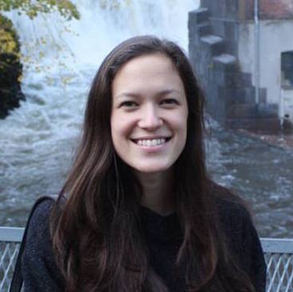

Welcome to my website! My name is Victoria (I often go by Torie), and I am a Computer Science major from Palo Alto, California. I am a current senior at Yale University, expected graduation May 2016. I began programming during my freshman year of college, and since then I have steadily progressed through the CS courses at Yale. Some of my favorite courses include Computer Graphics, Intelligent Robotics, and Computer Organization and Architecture. On campus, I am President of Float Yale, a Computer Science organization on campus aimed at diversifying Yale's Computer Science field.
Beyond Computer Science, I enjoy art (I have enjoyed several art classes at Yale), running, reading, writing, and eating. I grew up in the Bay Area for the entirety of my youth, with 3 brothers (1 older, 2 younger) whom I love very much. While New Haven has treated me well, I hope to return the the Bay Area soon!